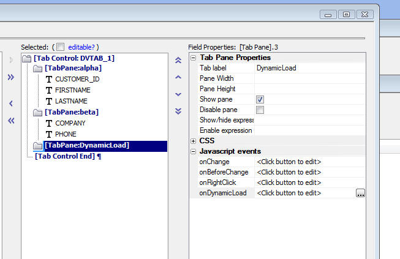

How to Define Dynamic Content for a Tab/Accordion Control Pane
Advanced uses might want to use the Tab and Accordion control's onDynamicLoad property to define a Javascript event that will fire when the particular tab/accordion pane gets focus for the first time. This allows you to load dynamic content into the tab/accordion pane only when the pane is visited. If the pane is never visited, then you do not waste time and server resources computing content that will not be seen.
As the image below shows, the third pane (labeled 'DynamicLoad') does not have any controls in it. When the user visits the tab pane, the onDynamicLoad function will fire and it will be set the tab pane content.

This example shows how you can use the onDynamicLoad event for a tab pane to load a Grid component into the tab pane (the Javascript code shown here was copied from an Action Javascript that opened a Grid).
In the example, the target grid is linked on the 'bill_state_region' field using the value from the 'BILL_STATE_REGION' field in the Detail View.
As you can see in the line highlighted in red, the linking value is read (using the _getValue() javascript function) from the Detail View (1st argument of _GetValue())
Code for the onDynamicLoad Function
var go = new Object();
go.gridDiv = 'dv1';
go.gridName = 'Customer';
go.alias = '{Grid.componentname}_Cust_ybvr';
go.submitCurrentFieldValues = true;
go.sourceGridPart = 'D';
go.sourceGridRowNumber = '1';
go.workingMessage = '<img src=\'CSS/A5System/images/wait.gif\' />Working...';
go.userFilter = '';
go.baseFilter = '';
go.arguments = '';
go.linkDefinition = 'Bill_state_region(C:[[[data.Bill_state_region]]])';
go.placeHolderValues = 'Bill_state_region =' +{Grid.object}._getValue('D','BILL_STATE_REGION');
go.userOrder = '';
go.overrideSettings = 'Style_name = `{Grid.style}`';
go.a5_default_path = '{grid.defaultPath}';
go.flagTimer = 'F';
go.flagQueryEcho = 'F';
go.flagDebugMode = 'F';
{grid.Object}.openChildGrid(go);
If you want to reset the pane so that it is automatically refreshed when the user visits that pane again, you can execute this ja
$('elementId').innerHTML = '';
window['tabObject'].reset();
Where elementId is the Id of the Div in which the pane content is rendered. (Use Firebug in Firefox to examine the HTML to see what the elementId is.
And tabObject is the name of the tab object in which the Pane with the OnDynamicContent function is displayed. Again, use Firebug to examine the code to determine the object name. An example tabObject name is:
GRID1_DVTAB_1R_1Obj
Where 'GRID1' is the Grid Alias, 'R_1' is row 1, and 'DVTAB_1' is the first tab object in the Detail View.